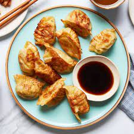

Korean Fried Dumplings
Korean fried chicken fills wonton wrappers in this pan-fried dumpling recipe that's great as an appetizer or main dish.

Ingredients
2 tablespoons rice wine
1 tablespoon sesame oil
1 tablespoon ginger paste
1 teaspoon salt
½ teaspoon ground black pepper
1 pound skinless, boneless chicken breast, cut into small cubes
1 cup potato starch
2 cups oil for frying, or as needed
1 (16 ounce) package wonton wrappers
1 large egg, beaten
Directions
Step 1 Combine rice wine, sesame oil, ginger paste, salt, and pepper together in a glass or ceramic bowl; add chicken and toss to coat. Cover and let marinate in the refrigerator for at least 30 minutes.
Step 2 Pour potato starch onto a plate. Line a baking sheet with foil and place a rack on top.
Step 3 Heat enough oil in a frying pan over medium heat to cover the chicken pieces.
Step 4 Remove chicken from marinade and toss in potato starch to coat. Add chicken to the hot oil and fry until no longer pink in the centers, about 5 minutes.
Step 5 Place a small amount of fried chicken inside each wrapper. Brush all edges with beaten egg and fold to seal. Set aside.
Step 6 Heat more oil in a frying pan over medium heat. Pan-fry dumplings, working in batches as needed, until golden, 3 to 5 minutes. Transfer dumplings to the baking sheet rack as you work to drain excess oil.
Step 7 Whisk together honey, gochujang, lime juice, sesame oil, garlic paste, and soy sauce for sauce in a bowl. Serve with dumplings.
Nutrition Facts
Per serving:
393 calories; protein 17.7g; carbohydrates 53.9g; fat 10.9g; cholesterol 57.5mg; sodium 731.6mg.